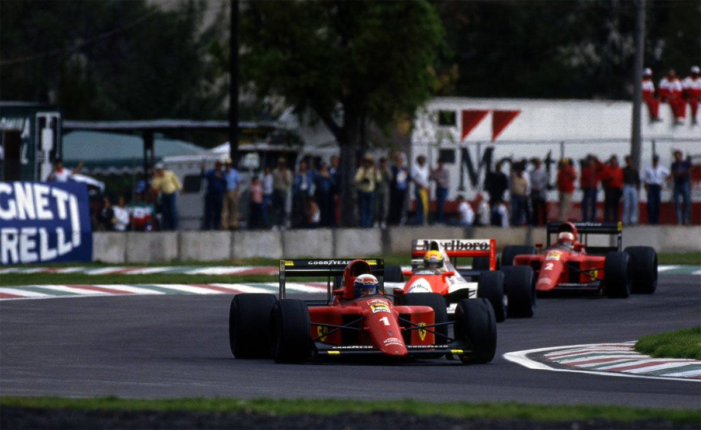
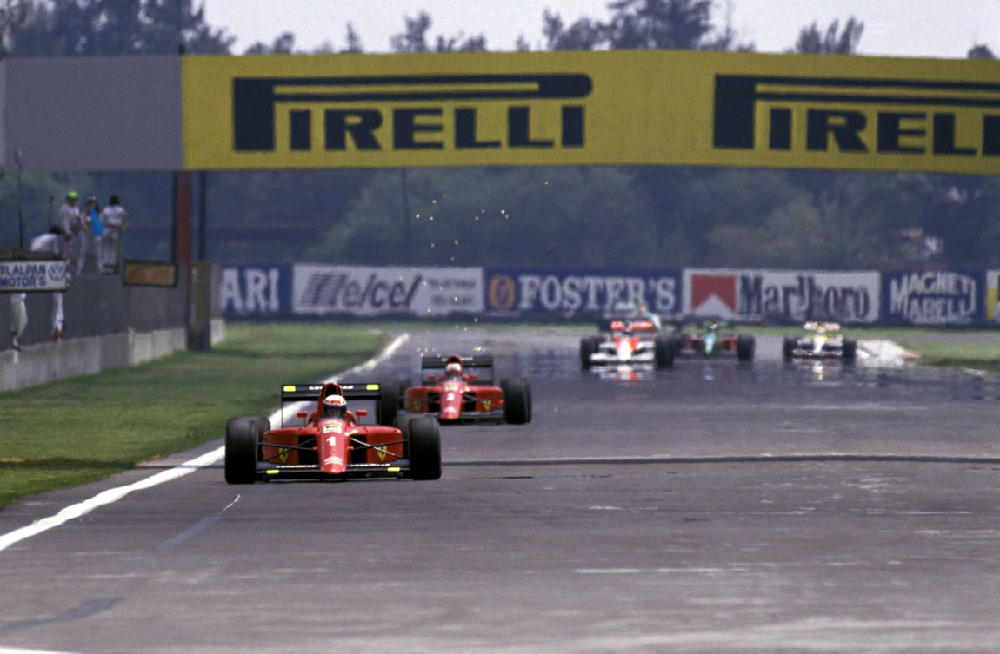
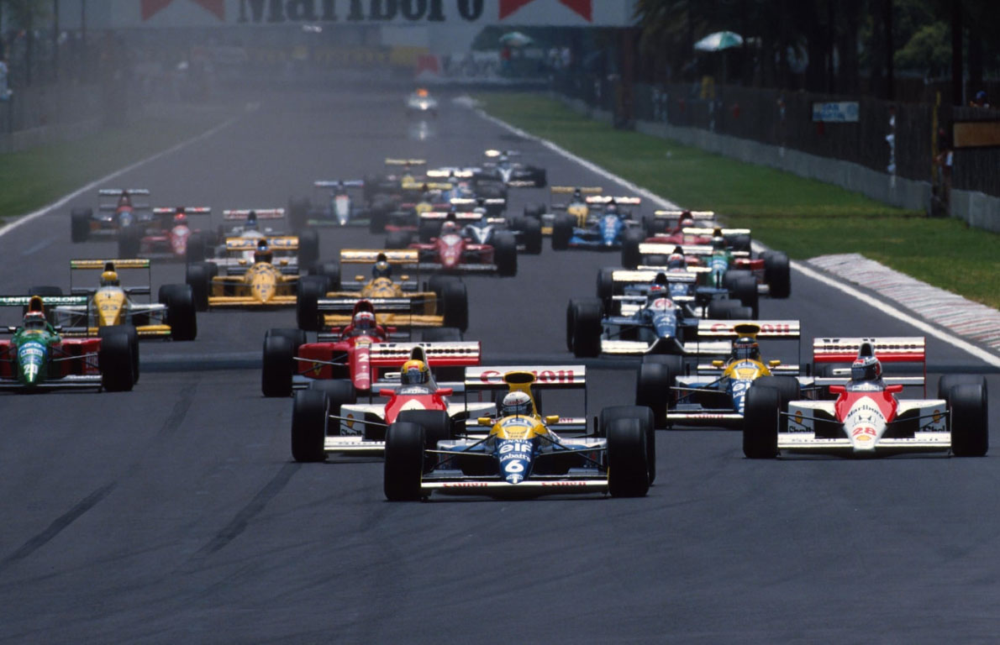
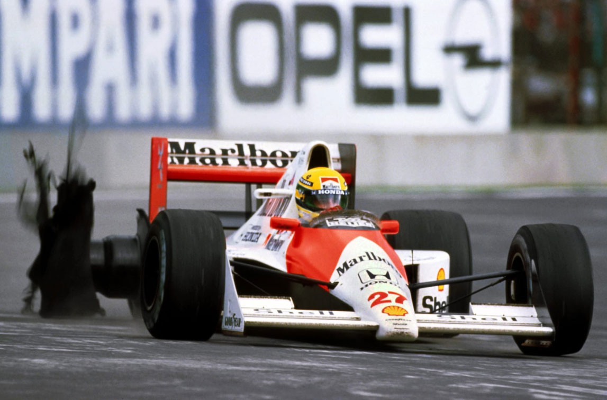
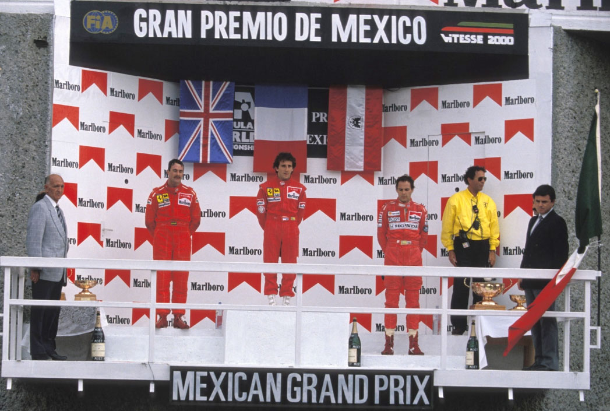

Dobradinha no México tira Ferrari da crise

Dois erros da McLaren presenteram à Ferrari: Berger, 11ª "pole", troca pneus; Ayrton domina, mas abandona porque... não troca. Prost recupera de 15º para a vitória. Grande show de Mansell e Berger. Piquet, combativo, é 6º. Ambas Leyton House e Moreno não largam.
Francisco Santos
A McLaren já estava pedindo há algum tempo. Desde o primeiro GP deste ano que em todas as provas tem havido qualquer falha na equipe, nos carros, ou com os pilotos. Mas, até agora, tem dado tudo certo, apesar das vitórias de Prost no Brasil, e de Patrese em San Marino. Santo Senna é grande... Mas, um dia ... No México, os erros da equipe não puderam ser encobertos pelo talento dos pilotos, e desta vez os outros não tiveram azar, nem cometeram erros graves. Ron Dennis foi o principal culpado do insucesso. Primeiro, aconselhou Berger a aumentar a pressão dos seus pneus, e estes desgastaram-se em poucas voltas, o obrigando a ir ao box logo à 13ª volta. Depois, quando Senna ainda liderava a prova à 40ª volta com 17s de vantagem sobre Mansell e 22s sobre Prost, não previu a troca de pneus de Ayrton, que ainda lhe garantiria a vitória. E, assim, a Ferrari conquistou a sua primeira dobradinha desde Monza 88, com Prost vencendo uma prova para a qual largou em 13º lugar no "grid", o que não lhe acontecia desde 1980, na sua primeira temporada de F1, na ... McLaren. Foi uma corrida com poucos abandonos: o maior número de carros classificados, 20, desde o GP do Canadá de 1976. Acima de tudo foi uma corrida espetacular nas últimas voltas, com Nigel Mansell empolgando toda a audiência mundial com a sua ultrapassagem sobre Gerhard Berger, por fora, na entrada da curva atualmente mais rápida da F1, a temível Peralta, uma "parabólica" de 180º feita a mais de 300km/h! O Grande Prêmio do México valeu só por esses momentos finais que Mansell nos ofereceu, ou pela tripla ultrapassagem de Prost (quem diria...) a Modena, Foitek e Mansell, assumindo o 2º lugar da prova.

Pré: acidente de Suzuki
Iniciada com pista molhada, esta sessão eliminatória embora tivesse acabado da mesma forma das últimas, com os mesmos quatro pilotos a graduarem para os treinos oficiais, foi mais emotiva, devido sobretudo ao fato da pista ter secado nos últimos minutos, permitindo o uso de pneus "slick". A grande novidade foi o melhor tempo ter ficado com Grouillard, mas o mérito fica mais com a Pirelli. O Life completou apenas uma volta, mas com problemas elétricos, enquanto Gachot lutou novamente com o motor Subaru, o mais lento de todos na reta, o que o obrigava a fazer malabarismos nas curvas. Os dois AGS ficaram de novo de fora, tendo como desculpa terem deixado para muito tarde as suas tentativas com os pneus de qualificação, Claudio Langes apenas fez três voltas. Uma semana depois do seu impressionante acidente em Le Mans, que o levou para o hospital, Suzuki bateu forte na frente aos boxes de forma estranha: calçou pneus "slick" um pouco cedo, com a pista não totalmente seca, e, ao tentar esquentar os pneus zigue-zagueando, perdeu controle do carro na reta, batendo forte. Mesmo assim, ainda conseguiu o quarto tempo. Mesmo com um carro ainda com problemas depois do acidente de Imola, Moreno passou, com o 3° tempo.
Senna "de férias": 6ª pole de Berger
Há tanto, tanto tempo que a memória de todos nós nem consegue recordar o longínquo GP em que Ayrton Senna não fez o melhor tempo em nenhuma das cinco sessões de treinos! Algo impressionante, realmente. Mas, segundo ele, preocupou-se "mais em obter uma regulagem confortável para a prova, do que um acerto bom para qualificação". Terá sido mesmo assim? Ele até tinha pedido a Roland Bruynseraede, inspetor de segurança da FISA, que o "pole” largasse do lado esquerdo e não da parte interna da pista, mais suja... Os melhores tempos das cinco sessões foram para Mansell, Berger (a "pole" conquistada na 6ª feira), Boutsen, Patrese, e Berger. Note-se que foram as Williams os principais adversários de Berger nos treinos, mas que no "warm- up" Senna foi segundo. De realçar também que Prost, depois de na 6ª feira ter dado uma rara rodada, não conseguiu ser rápido no sábado com pneus macios, fazendo apenas o 13º tempo. Alesi, apesar das Tyrrell serem bem sensíveis nas bossas deste circuito, conseguiu o 6º tempo. Ambos os Leyton House não se qualificaram e Moreno foi desclassificado por ser empurrado por um fiscal de pista, depois que a FISA lembrou a todas as equipes que a nova proibição de empurrar os carros não era só para as provas. Pena que Pavanello se tivesse esquecido de avisar Moreno, já que o seu tempo de 6ª feira (1m21,142s) lhe daria um lugar no "grid".

Grande espetáculo à custa dos McLaren
Poucos treinos para um GP tiveram tão pouca importância como desta vez. Que importou Ayrton estar ausente da primeira fila do grida pela primeira vez desde Phoenix? Nada, pois quando a luz verde se acendeu, o McLaren 27 disparou de tal forma que na primeira curva já estava ao lado de Berger e Patrese, e apesar de ter dado o espaço suficiente a Berger na primeira curva, e de Patrese passado para o comando, no final da primeira volta, já era Ayrton o líder, embora com Patrese grudado no seu câmbio. Não tivemos de esperar muito tempo para ver Berger diminuir o ritmo: desde a 3ª volta que os pneus dianteiros começaram a granular como resultado da maior pressão que hes foi posta. Ambas as McLaren tinham começado a prova com os GoodYear "C". Apenas as Williams e as Onyx tinham largado com os "B" mais duros nesta pista cujo asfalto oferece pouco atrito, apesar de algumas partes, como a curva Peralta, terem sido completamente recapeadas. Depois de 12 voltas Berger já não tinha pneus e teve de ir às boxes. Voltou em 12º lugar, e começou de imediato uma recuperação sensacional. O erro de Ron Dennis com a pressão dos pneus foi ainda mais agravado com a lavagem do circuito de manhã, o que o tomou mais abrasivo, o que a GoodYear não levou em conta. Isso iria ser decisivo no desenrolar da prova, embora os técnicos do fabricante de pneus tivessem culpado os dois pilotos da McLaren de terem forçado demais o andamento nas primeiras voltas, com tanques cheios, e terem destruído os seus pneus numa prova em que não estavam previstas quaisquer trocas de pneus. Realmente, as Ferrari, por exemplo não pararam. Prost já estava em 6º na 15ª volta, depois de ter largado, repito, em 13º e ainda ter perdido 2 posições na primeira volta. Senna liderava confortavelmente com 17s de vantagem sobre Piquet, que fazia as melhores voltas e uma bela prova. Eram percorridas 35 das 69 voltas. No entanto, as duas Ferrari iam chegando na Benetton, depois de já terem passado as duas Williams, cujos pneus mais duros não lhes davam suficiente aderência. Os pneus da Benetton de Piquet já se degradavam e ele não conseguia mais manter o mesmo ritmo. Entre a 37ª e a 42ª voltas foi ultrapassado pelas duas Ferrari, e logo em seguida foi ao box trocar pneus, sendo por isso passado por Nannini.

Prost havia escolhido uma regulagem aerodinâmica com menos aerofólio do que Mansell, dando-lhe uma maior velocidade na reta. Por isso, o francês começou a ganhar terreno ao britânico, e numa manobra inusitadamente arriscada, quando este se praparava para colocar volta em Foitek e Modena, ultrapassou aos três, para ganhar o segundo lugar e ali decidir o resultado final da prova. Isto porque Senna "já sentia desde a 25ª volta o carro começava a perder equilíbrio; avisei o box que iria entrar para trocar pneus. Eles não acreditaram, disseram para não me preocupar, que não haveria qualquer problema com os pneus, que todos os cálculos haviam sido feitos, e para continuar. Fiz outra tentativa na volta seguinte, mas a resposta foi a mesma, e... deu no que deu!" Começara a diminuir o seu andamento e a vantagem sobre as Ferrari. A McLaren estava nitidamente desequilibrada, e Ayrton não podia fazer nada para evitar a aproximação de Mansell, e depois de Prost, que, à 60ª volta passou para o comando da corrida. Ayrton avisado de novo chama o box, mas não obtivera qualquer resposta. Hesitou e não entrou, o que deveria ter feito voltas antes ("o erro também foi meu", confessou ele). Só depois de ter sido passado por Mansell, na volta seguinte, Ron Dennis o aconselhou a continuar, para tentar salvar pelo menos o terceiro lugar. Mas, nem isso foi possível, já que logo em seguida o pneu, já muito baixo e nas lonas, explodiu, e Senna rastejou até às boxes para abandonar e ser depois classificado em 20ª. Entretanto, Berger já estava em 3º, e depois de uma rodada de Mansell herda o 2º lugar. Mas, o inglês volta com tudo, e na volta seguinte sai dos longos "ésses" ainda mais grudado na McLaren. Na volta anterior, Berger tinha "fechado a porta" na entrada da Peralta, e agora manteve a sua trajetória normal. Mas, Mansell não tentou passar por dentro. Veio com tudo, e numa das mais belas manobras que já vimos na Fl. passa por fora na rapidíssima "parabólica", a duas voltas do final. Berger ainda tenta responder, mas já não consegue, embora tente por várias vezes passar a Ferrari. Foi um duelo espetacular, que valeu o GP. Atrás de Nannini, Boutsen conseguiu levar a Williams ao 5º, mesmo na frente de um aguerrido Piquet que, como no Brasil, roubara o 6º lugar de Alesi cuja Tyrrell falhava. Donnelly conseguia o 8º, frustrado com problemas de pneus, enquanto Patrese o separava de Warwick com problemas idênticos. Nakajima foi um dos poucos a abandonar este GP com 20 carros classificados: depois de sobreviver a uma rodada na largada provocada por Donnelly, perante os olhares estupefactos dos telespectadores (uma das câmeras de TV estava montada na sua Tyrrell) bateu na traseira de seu compatriota Suzuki, quando este abrandava para entrar nas boxes.
